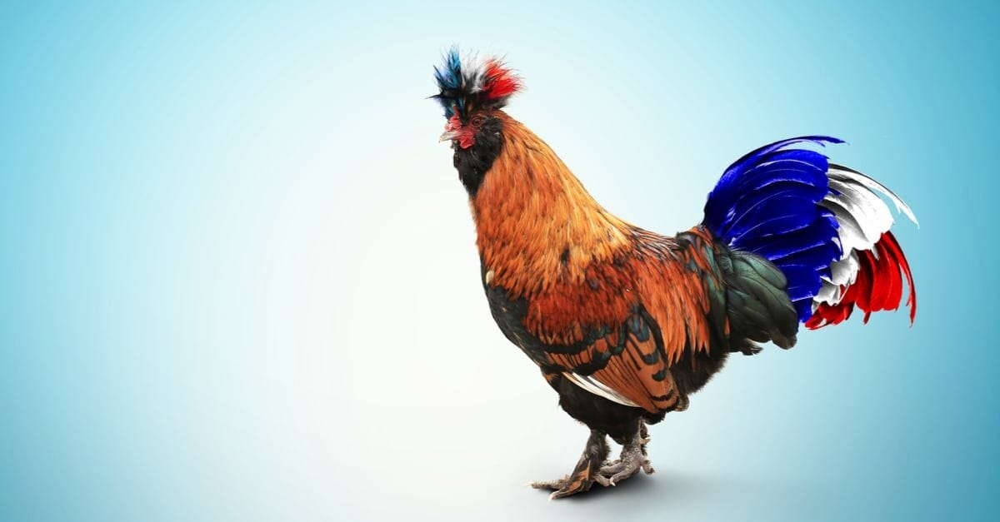
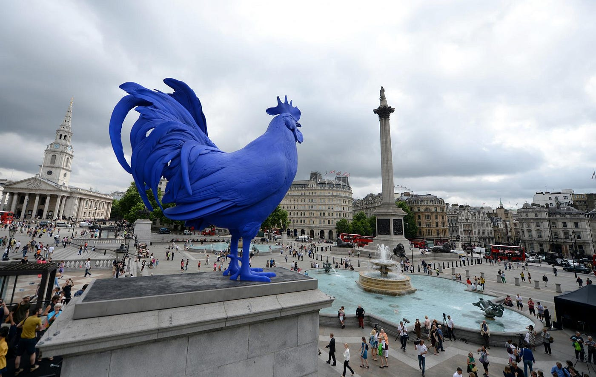

Dec 18, 2021
This AI device for chicken songs
A short biography of an idea inspired by listening to chickens singing

When this idea came to me I first thought to write about it in french but I am now writing it in English. In fact, it just happened hours ago when I was on the rooftop of my mother’s home I heard the song of the chickens when I remembered this idea t that I had weeks ago when I was in the same setting listening to these same chickens. What this idea is about is caring about animals because listening to these chickens remembered me of how important it is to take the time to see how animals behave and to learn from them because like us they do have means of communication that could be insightful even if these means of communication are not as efficient as the internet and all these new technology gadgets that we are using in our everyday life for interacting and communicating. Like us most animals use their voices to communicate and while hearing these chickens singing at the beginning of the dawn each one of them was making its partition after the others and some of them being near and other far away from me. It was obvious that the song of one induced the song of another and so one like a domino effect, which made me willing to spot each of them and know where they are. But the only indications that I had were the level of the volume of these songs. I imagined building a microarray device set on top of my mother’s home in order to be able to listen to them and geolocalize their location with this device. This device could not only spot their location but it could record every day the singing of these chickens and use machine learning for trying to find patterns that could tell us something about the communication of chickens.
Who knows? maybe using this AI device could help us find something interesting and useful to us human beings and God advised us to learn from animals and every other creature by taking care of how they are behaving in nature. Writing this short idea biography reminded me of this article that I have published a year ago that was about how animals teach us networks. I remember that the day following this first short past article, I was going to sport with one of my friends and discussed with him how we could leverage AI to know more about animals and how maybe they could help us know some coming events before they happen.
But it is very likely that in a few days I will be hearing less chicken because thanksgiving will come and many of them will end up on dishes of families and I hope all the good to all families of the world a very happy and good thanksgiving.
As Londoners do, I was joking with my french friends while highlighting to you the biography of this idea about this AI device designed for learning chicken communication and geo spotting them using the signal of their singings.
